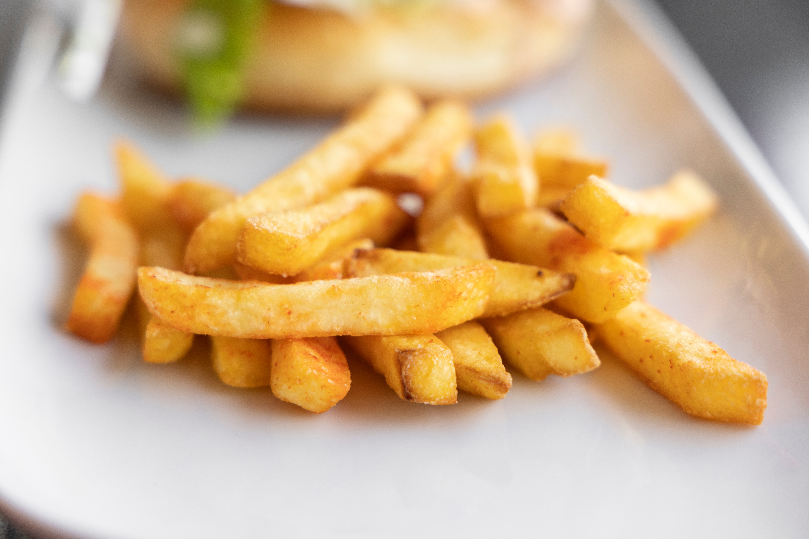
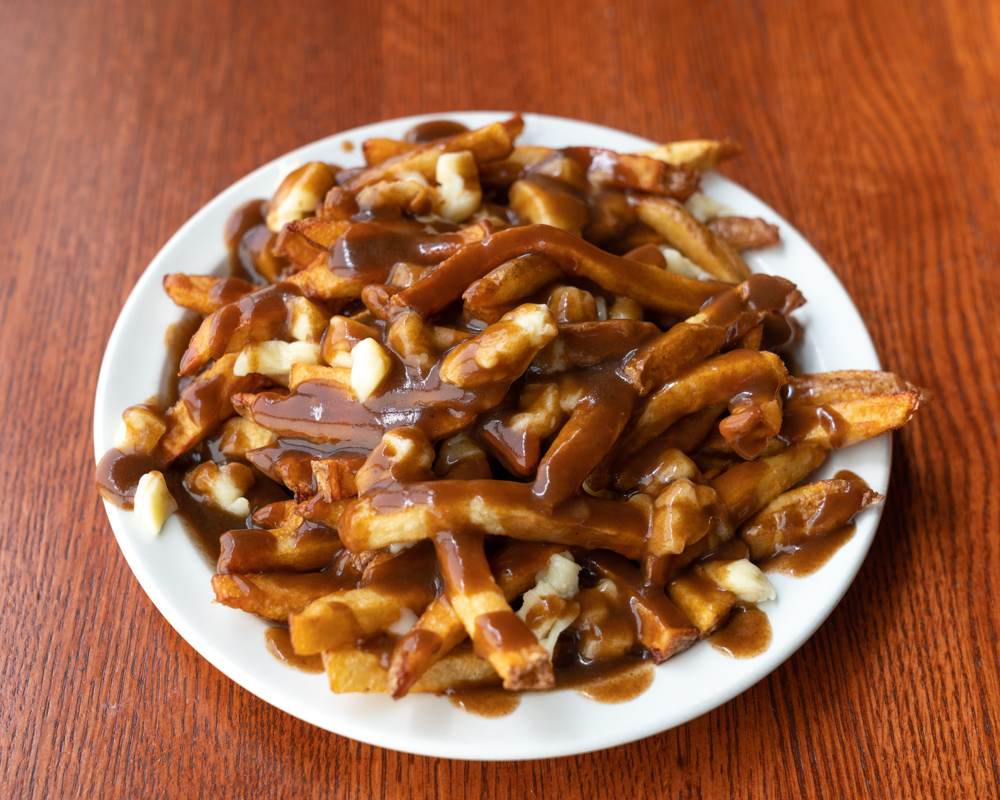
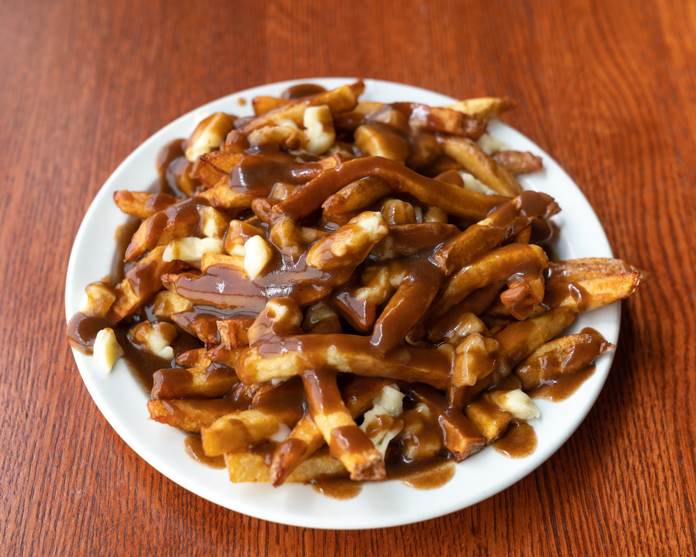

To all the Canadians we should all know what poutine is, but to those in other countries they may not have heard of it at all! Which is actually quite a shame since the dish is so delicious! Combining 3 major ingredients to create this simple dish; cheese curds, fries, and gravy.
 

To those who want to know more about Canada’s signiture dish, explore this website to find out more!! There’s lots to explore, from the history to fun facts! Now what are you waiting for! Go explore and learn more about our famous dish!
Back to Top